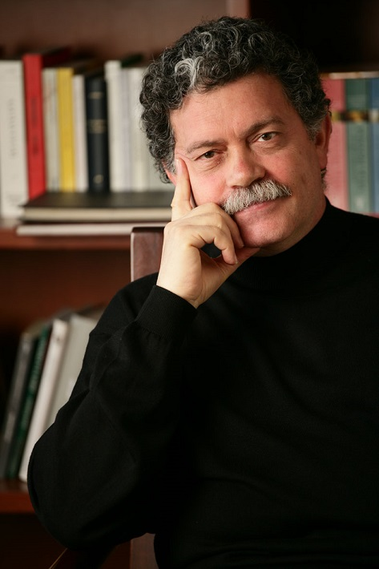

Walter Riso, nació en Nápoles en 1951.
Siendo un niño sus padres emigraron a la República Argentina y se establecieron en Buenos Aires. Su infancia transcurrió en la calle Pichincha donde estaba el antiguo mercado Spineto, un barrio poblado de inmigrantes Italianos y de otras nacionalidades.
Desde pequeño intento estudiar piano con poco éxito, sin embargo la profesora le compró unos cuadernillos llamados “plumita” para que escribiera poesía y de ahí nació su pasión por la escritura y la lectura, la que cultiva hasta el momento.
Su adolescencia transcurrió entre Buenos Aires y San Luís, donde estudió bachillerato técnico mientras ayudaba a su padre en la pizzería “El Vesubio” atendiendo las mesas o haciendo pizzas. De esa época aprendió el arte de la gastronomía Italiana, la cual practica asiduamente.
Se destacó como un excelente jugador de fútbol y baloncesto; también practicó atletismo, especialmente salto triple.
Al terminar su bachillerato inició sus estudios en Ing. Electrónica y sólo cursó cuatro años porque le sedujo el pensamiento hippie y político de la época, lo que lo llevó al estudio de las culturas orientales y a las ciencias sociales.
En esos años comenzó a estudiar psicología y teatro. Durante cinco años se consagró a ambas disciplinas hasta que en 1979 emigró a Colombia, donde culminó su carrera y ejerció la profesión de terapeuta y docente.
Luego se especializó en terapia cognitiva, y estudió filosofía y bioética, pues siempre le han interesado las ciencias humanistas que tengan que ver con el desarrollo del potencial humano.
Por lo mismo ha escrito múltiples libros técnicos y de divulgación con el fin de prevenir y promocionar aspectos importantes de la salud mental y la calidad de vida.
Actualmente es conferencista y docente en distintas universidades.